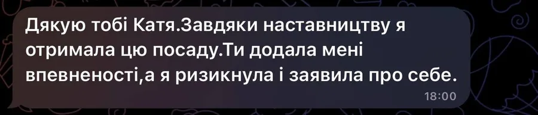
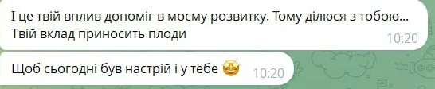
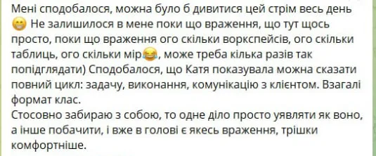
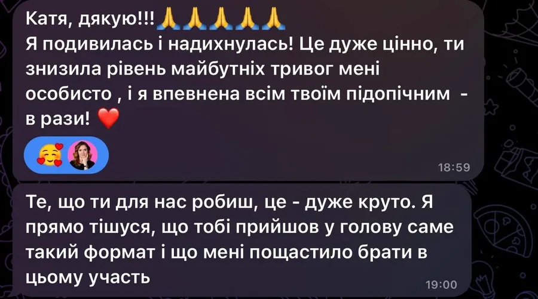
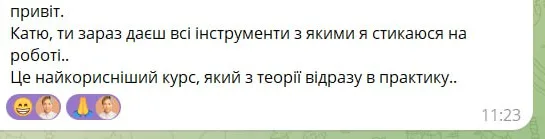
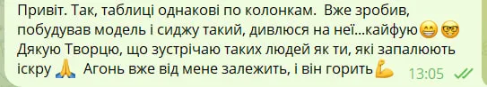
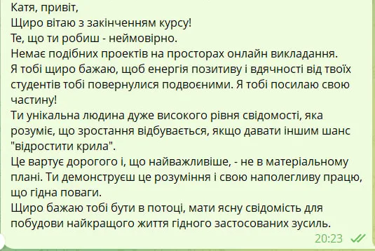
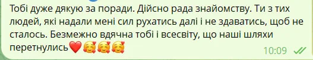
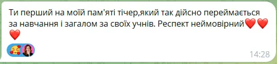

Що ти забереш собіпо сферах твого бізнесу і життя
На курсі ти за 10 тижнів збираєш свою AI-систему і забираєш усі мої навички для Claude пакетом. Ось що вона робить для тебе.
Рутина і фокус
- Ранковий план. Зранку не збираєш день по нотатках: план і задачі вже в календарі.
- Ідеї з голосових у контент-план. Надиктувала в душі чи в потязі, а ідея вже лежить у плані.
- Фінанси. Система повністю веде облік, ти не сидиш над таблицями.
Контент і соцмережі
- Тексти твоїм стилем. AI знає твій бізнес і пише твоїми словами: щонайменше 80% слів твої.
- Карусель без чистого аркуша. Замість порожнього слайда одразу є чернетка в твоєму стилі, з картинками з AI-двійником.
- Монтаж рілз. Знімаєш рілз і не сидиш над монтажем.
- Новини для Threads. Щодня є що сказати, і не треба шукати новини.
- Публікація за розкладом. Пости виходять самі, вручну викладати не треба.
Клієнти і комунікації
- Коментарі й директ. Ніхто не лишається без відповіді: помічниця щогодини готує відповіді, а надсилаєш ти.
- Повідомлення після розбору. Після розмови одразу є готове повідомлення людині, ти не думаєш над ним увечері.
- Відгуки. Збираються самі, нічого не губиться.
Аналітика
- Що залітає, щопонеділка. Бачиш, які рілси й пости зайшли, і знаєш, що знімати далі, а не гадаєш.
- Огляд тижня. Раз на тиждень бачиш, що в блозі відбулося, без таблиць.
- Усі соцмережі в одному місці. Instagram і решта соцмереж разом, не треба відкривати кожну окремо.
- Вартість підписника. Бачиш, у скільки тобі обходиться кожен новий підписник, і розумієш, куди йдуть зусилля.
Бізнес і продукт
- Лід-магніти і продукти одразу в Notion. Claude сам збирає сторінку: гайд, чекліст, базу. Тобі лишається поправити і поділитись.
- Воронки з кодовим словом. Людина пише слово, бот надсилає подарунок і ставить тег, і ти бачиш, хто чого хоче.
- Продаюча презентація. Для вебінару чи розбору: слайди, заперечення, чекліст.
Інструменти й агенти
- Свій бот у Telegram, цілодобово. Помічниці для текстів і візуалу працюють, навіть коли комп вимкнений.
- Усі мої навички для Claude пакетом. Хуки, сценарії, сторіс, прогріви, офери: встановила, і працюють.
На чому стоїть систематри сервіси, і все працює
Думає, пише твоїм стилем, будує сайти і ботів.
«Контекст», контент-план, лід-магніти і продукти.
Твої сайти живуть тут, як цей, і викладаються одним кліком.
За бажанням, окремі платні сервіси
- Higgsfieldкартинки і відео з AI
- HeyGenвідео з твоїм AI-аватаром
- Nakarkalaворонки в Telegram і Instagram
Мій тиждень до і післяскільки часу звільнила система
- Блог
- Пости, каруселі, сторістексти, візуал і щоденні сторісдо21 год3 год × 7 днівпісля5 год1 год × 5 днівзвільнено16 год
- Монтаж рілзсубтитри, обкладинка, перебивкидо7 год 30 хв5 рілз × 1,5 годпісля50 хв5 рілз × 10 хвзвільнено6 год 40 хв
- Дослідження тем і трендівщо болить аудиторії і що зараз заходитьдо2 год2 год на тижденьпісля30 хв30 хв на тижденьзвільнено1 год 30 хв
- Бізнес
- Продуктилід-магніти, гайди, сторінки в Notionдо4 год4 год на тижденьпісля1 год1 год на тижденьзвільнено3 год
- Воронкилід-магніти з кодовим словом, прогріви, аналіздо2 год2 год на тижденьпісля30 хв30 хв на тижденьзвільнено1 год 30 хв
- Рутина
- Задачітримати все в голові і плануватидо3 год 30 хв30 хв × 7 днівпісля25 хв5 хв × 5 днівзвільнено3 год 5 хв
- Пошта і відповідірозібрати, відповісти, нічого не загубитидо7 год1 год × 7 днівпісля50 хв10 хв × 5 днівзвільнено6 год 10 хв
- Робота
- Навчання і презентаціїпідготовка тренінгів і слайдівдо2 год2 год на тижденьпісля30 хв30 хв на тижденьзвільнено1 год 30 хв
- 80%часу на блог, бізнес, рутину і презентації я повернула собі
- ≈ 39 год*на тиждень для життя, це понад 5,5 години щодня
- 2 днівихідних без блогу і задач
* І це лише частина: в основній професійній роботі AI економить мені ще більше.
А скільки годин звільниться в тебе? Порахуй на колесі балансу: 3 кроки, з телефона, нічого нікуди не відправляється.
Порахувати свій тиждень- 2 тижнівід старту курсу, і Claude вже пише твоїм стилем
- 0рядків коду: установки робить Claude, а не ти
- 80%слів у текстах твої, AI не пише замість тебе
- 10 тижніві на виході твоя власна AI-система
- тижні 1-2Розпаковка
Проєкт у Claude на компі й телефоні. Нічого не встановлюємо.
- тижні 3-6Проявлення
Контент-план, карусель, рілз. Своя студія рілз.
- тижні 7-10Агенти
Свій бот у Telegram з Леєю і Марком.
Чесно про умови: потрібна підписка Claude Pro, її оплачуєш окремо, напряму в Claude. Підійде комп на Windows або Mac.
Відгукилюдей, яких я вже навчала
«Система з AI» стартує вперше 01.12.2026, тому тут відгуки з моїх інших навчань і наставництва.
Це просто супер! Дивлюсь і не вірю, що я змогла таке зробити! Катерино, не перестаю дякувати! В голові вже крутиться купа ідей, як застосувати ці знання в роботі!
Анастасія Найкращий наставник, якого я можу щиро рекомендувати! Я з першого потоку навчання і можу впевнено сказати: Катерина неймовірна! Щира, відкрита, надихаюча та завжди готова підтримати. З нею хочеться вчитися, розвиватися і досягати більшого. Катерина це саме та людина, яка вірить у тебе навіть тоді, коли сам сумніваєшся. Дякую за все!
Юлія Мені дуже сподобалось спілкування з Катериною. Вона одразу професійно направила нашу розмову в правильний вектор. Все було зрозуміло, чітко й структуровано. Дуже відчувалась щира участь і зацікавленість у прийнятті правильного для мене рішення. Якщо ви ще вагаєтесь, то вже час діяти разом з таким чудовим наставником! Дякую!
Ольга
Ще 10 відгуків у скрінах з Telegram









Питання і відповіді
Скільки часу це займає?
2-3 години на тиждень: короткі уроки і практика на твоїй системі. Тиждень з розпаковкою трохи довший.
Чи треба вміти програмувати?
Ні. Ти отримуєш готовий пакет і пишеш Claude «розгорни». Далі він сам встановлює систему, питає тебе і налаштовує під тебе. Я показую кожен крок на демо-боті.
Я не веду блог. Мені підійде?
Так. Блог у системі одна з частин. Можна почати з життя: гроші, план дня, задачі, тіло. Контент підключиш, коли захочеш.
У мене Mac. Або Windows. Підійде?
Так, інструкції є для обох.
Що потрібно, крім ноутбука?
Платна підписка Claude Pro, на ній працює вся система. Її оплачуєш окремо, напряму в Claude.
AI писатиме замість мене?
AI бере структуру, редагування, монтаж і планування. Слова, історії і голос лишаються твої, і система вчиться саме на них.
Що буде, коли я натисну кнопку?
Бот запише тебе на безкоштовний розбір 1:1. Я напишу тобі особисто, і домовимось про час.
Коли старт і скільки триває?
Старт 01.12.2026, курс триває 10 тижнів.
Подивись систему наживо
Ефіри, живі покази і всі анонси я роблю в Telegram-каналі. Там видно, як моя система працює щодня. А як вона влаштована зсередини, я показала на схемі.